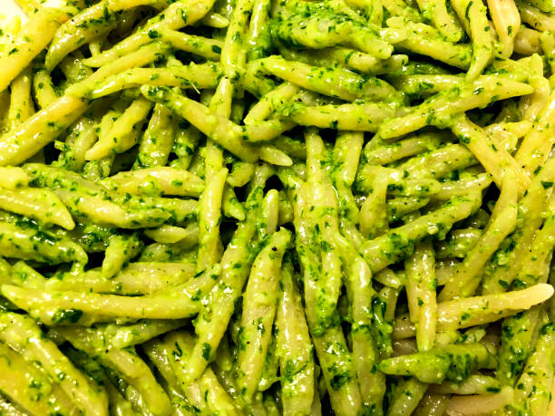

Pasta with Pesto

With Italy as my neighbor country, pasta and pesto are commonplace in
supermarkets and a staple for students or families.
Ingredients (per adult)
- 250g pasta
- 50g pesto
- 50g parmesan (ideally not grated beforehand)
- water
- salt
Steps
-
Put water in a pot (enough to cover the pasta when it is softened) and
bring it to a boil
-
Salt heavily, then add the pasta. Give it a stir. You can now turn down
the heat a little bit, it should simmer but it doesn't have to boil.
Cover half of the pot with a lid to preserve the heat
-
Wait for the time given on the pasta packaging. Then try some noodles.
You want them to still have a bit of bite, so ideally you should stop
heating them as they are a bit too tough, because they will continue to
cook a bit afterwards
-
Drain the pasta, mix it with the pesto, grate and add parmesan as you
like
Enjoy!